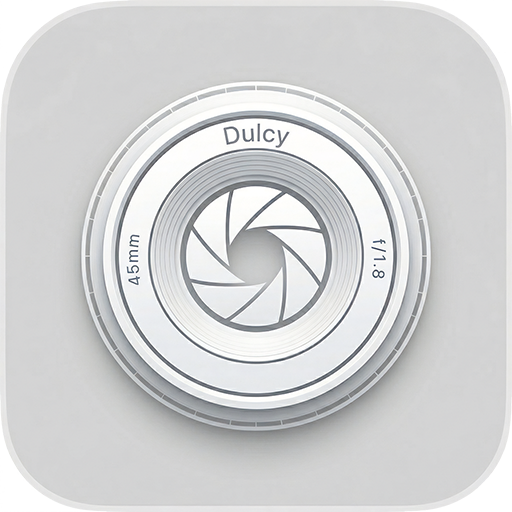
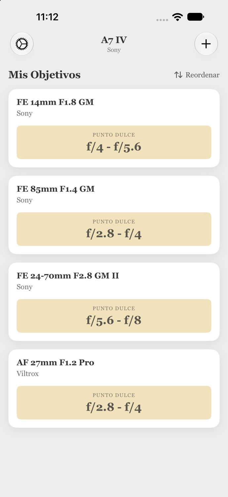
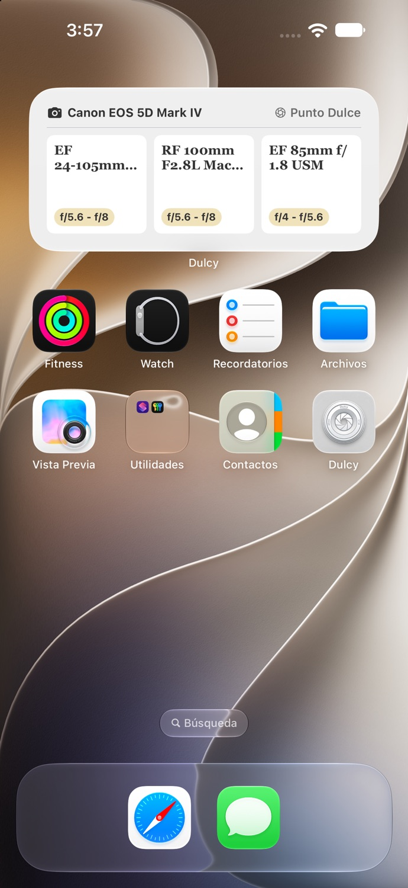
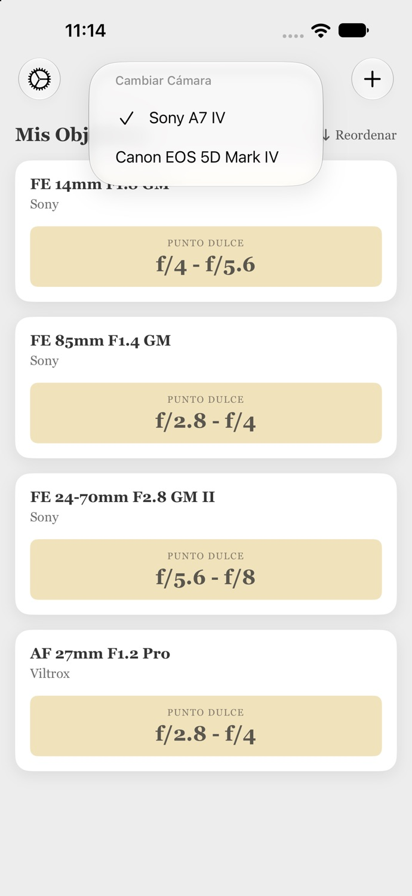
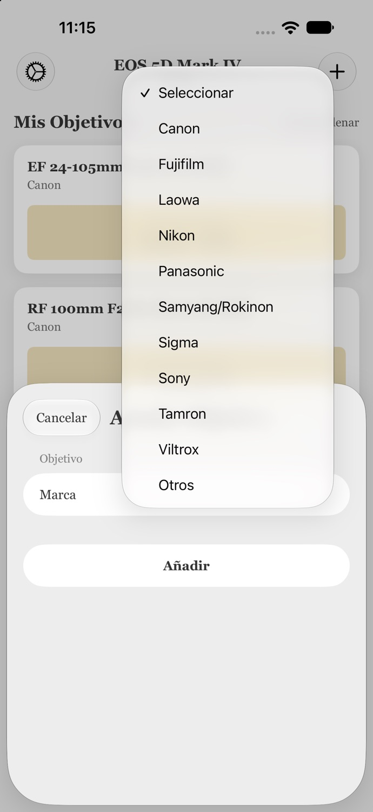
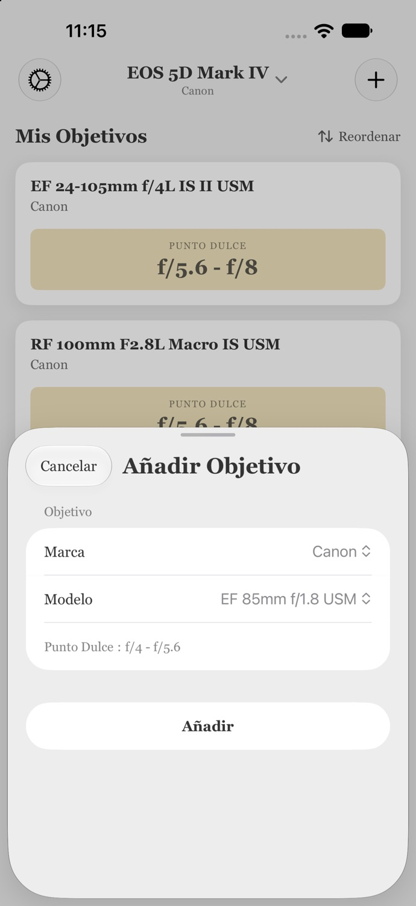
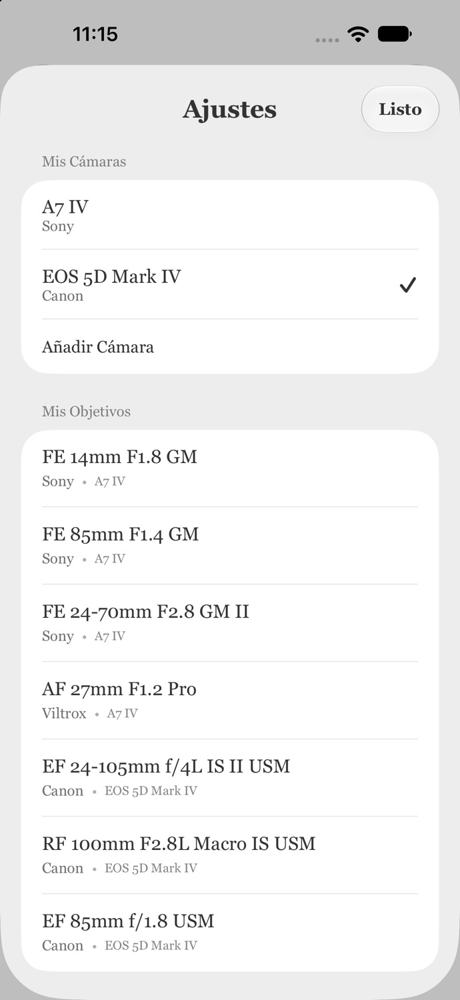
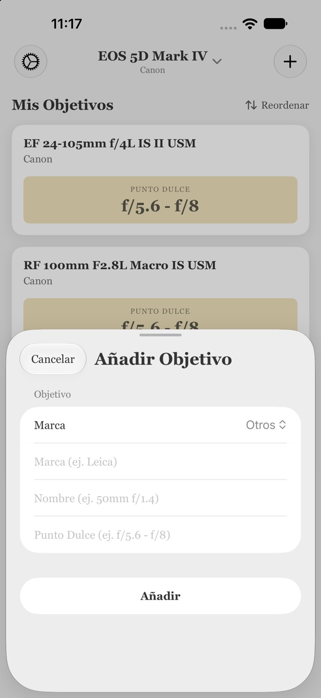

Widgets para Pantalla de Inicio
Consulta tu cámara activa y las aperturas óptimas de tus objetivos directamente desde la pantalla de inicio o bloqueo de iOS sin abrir la app.








Consulta tu cámara activa y las aperturas óptimas de tus objetivos directamente desde la pantalla de inicio o bloqueo de iOS sin abrir la app.
Encuentra al instante el rango de diafragmas exacto donde cada uno de tus objetivos ofrece la máxima nitidez y resolución en cada disparo.
Base de datos con más de 95 cuerpos de cámara y objetivos de 10 marcas líderes, con buscador predictivo y filtros rápidos por marca.
Vincula tus objetivos a cada cuerpo específico, cambia de cámara activa al instante y copia objetivos entre cuerpos con un simple deslizamiento.
Da de alta cualquier objetivo manual, clásico o cuerpo de cámara no catalogado con su punto dulce personalizado en segundos.
Sincronización encriptada con tu cuenta de iCloud en todos tus dispositivos. Sin registros, sin analíticas ni publicidad—funciona 100% offline.